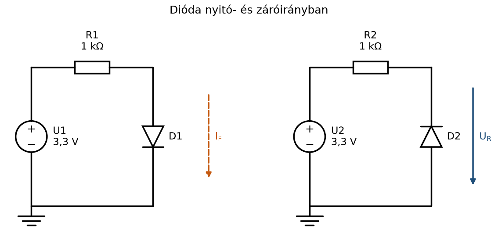
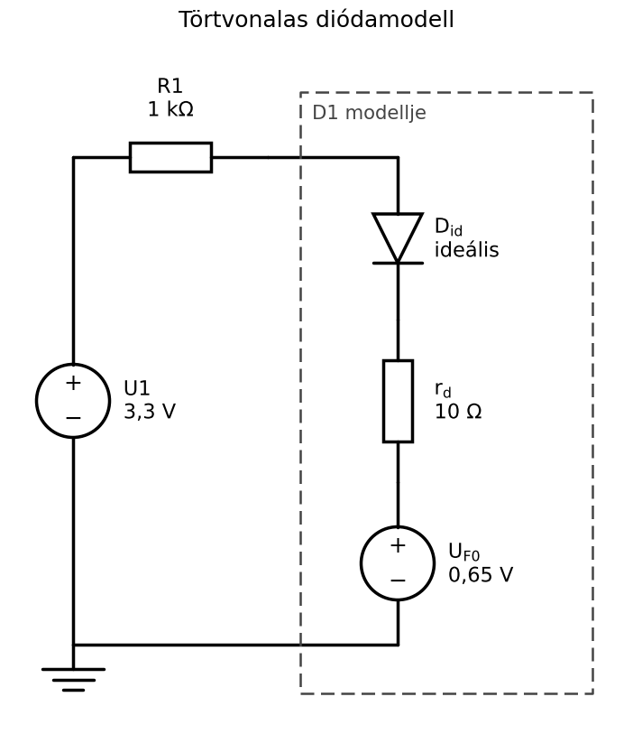

Ebben az alfejezetben megismered az első olyan alkatrészt, amelynek viselkedése az áram irányától is függ. A végére (1) el tudod mondani a kiürített réteggel, miért vezet a dióda egyik irányban és miért alig a másikban; (2) számolsz a Shockley-egyenlettel, a „dekádonként 60 mV” szabállyal és a nyitófeszültség hőfokfüggésével; (3) a feladathoz illő diódamodellt választasz, és tudod, mekkorát tévedsz vele.
A szenzormodul bemenetére 12 V érkezik egy adapterről. Ha valaki fordítva köti be a vezetékeket, a modul tönkremehet. A legegyszerűbb védelem egy dióda a bemenettel sorban: helyes polaritásnál vezet, fordítottnál nem. De mennyi feszültség vész el rajta helyes bekötésnél? Ha 9 V-ról is működni kell, nem mindegy, hogy 0,4 V vagy 1 V. A modul induktív terheléséhez tartozó szabadonfutó dióda (DS1, Schottky-dióda) mintaadatlapján pedig ez áll: V 1 A-en. Miért kell megmondani az áramot is? Mert a dióda feszültsége nem állandó, és nem is arányos az árammal.
Az Ellenállás és az Ohm-törvény alfejezetben láttad, hogy az I–U karakterisztika nemlineáris elemnél nem egyenes. A Nemlineáris elemek és a munkapont alfejezetben megtanultad, hogyan kell ilyen elemmel munkapontot számolni. Most a legfontosabb ilyen elemet ismerjük meg alaposan.
A vezetőben (réz) rengeteg elektron mozog szabadon, a szigetelőben (műanyag, kerámia) gyakorlatilag egy sem. A félvezető (semiconductor), például a szilícium, a kettő között van: szobahőmérsékleten kevés elektronja szabadul ki a kötéseiből, de melegítéssel ez a szám meredeken nő. A kiszabadult elektron helyén egy hiány marad, a lyuk (hole). Egy szomszédos elektron beugorhat a lyukba, ekkor a lyuk „odébb megy”. A lyukat ezért úgy kezelhetjük, mint egy pozitív töltésű, mozgékony részecskét.
A tiszta szilícium rosszul vezet. A tulajdonságait adalékolással (doping) állítják be: nagyon kis mennyiségű idegen atomot kevernek bele.
Fontos: sem az n, sem a p oldal nem töltött. A mozgékony hordozót az adalékatom ellentétes töltésű, rácshoz kötött ionja egyenlíti ki. Az ellentétes típusú, ritka hordozót kisebbségi hordozónak nevezzük (a p oldalon az elektront, az n oldalon a lyukat).
Ha egy kristályban egymás mellé kerül egy p és egy n tartomány, a határon pn-átmenet keletkezik. Az n oldalról elektronok vándorolnak (diffundálnak) a p oldalra, a p oldalról lyukak az n oldalra, mert ott kevés van belőlük. Találkozáskor megsemmisítik egymást (rekombináció). A határ mellett így elfogynak a mozgékony hordozók, csak a rögzített ionok maradnak: ez a kiürített réteg (depletion region). Az ionok elektromos teret hoznak létre, amely visszatartja a további vándorlást. A két oldal között egy potenciálgát alakul ki, szilíciumban nagyjából 0,6–0,7 V. Ezt voltmérővel nem lehet kimérni, mert a kivezetések fém–félvezető érintkezései ugyanekkora ellentétes feszültséget adnak.
A p oldal kivezetése az anód, az n oldalé a katód. Az előfeszítés a dióda anódja és katódja közé kapcsolt feszültség, :
Hasonlat: a dióda olyan, mint egy visszacsapó szelep a vízcsőben, az egyik irányba átenged, a másikba nem. A hasonlat korlátai: a dióda nem egy adott nyomásnál „nyílik ki” élesen, záróirányban egy kicsit mégis szivárog, és túl nagy záróirányú feszültségnél letörik.
A rajzjel háromszöge a technikai áramirányt mutatja (anódtól a katód felé), a függőleges vonal a katód. A tokon a katódot általában egy gyűrű jelöli.

A bal oldali körben a dióda nyitóirányú: az anódja a pozitív oldal felé néz. A jobb oldaliban fordítva van beépítve, ezért rajta szinte a teljes 3,3 V esik (ez a záróirányú feszültség), az áram pedig nanoamperes nagyságrendű.
Gondolkodj előre: ha a záróirányú feszültséget 1 V-ról 10 V-ra növeled, a szivárgási áram a tízszeresére nő, vagy alig változik? Döntsd el, mielőtt továbbolvasol.
Alig változik: a szivárgást az szabja meg, hány kisebbségi hordozó keletkezik hő hatására, nem az, hogy mekkora a tér, amely átsodorja őket. A hőmérséklet viszont erősen számít.
Definíció. A termikus feszültség , ahol J/K a Boltzmann-állandó, C az elemi töltés, pedig az abszolút hőmérséklet kelvinben. Dimenzió: J/K · K / C = J/C = V. Értéke 300 K-en (kb. 27 °C) 25,9 mV, 25 °C-on 25,7 mV; a könyv kézi becslésekben 26 mV-tal kerekít.
Definíció. Az ideális pn-átmenet árama a Shockley-egyenlet szerint
Itt a telítési áram (saturation current), egy nagyon kicsi, az adott diódára jellemző áram (pikoamper–nanoamper), az idealitási tényező, valós diódáknál tipikusan 1 és 2 között. Az kitevő dimenzió nélküli, mert feszültséget feszültséggel osztunk.
Mit mond a képlet? Záróirányban ( néhányszor ) az exponenciális tag eltűnik, és : az ideális átmenet szivárgása nem függ a feszültségtől. Nyitóirányban ( néhányszor fölött) a elhanyagolható, és az áram exponenciálisan nő. Megfordítva az egyenletet:
Érvényesség: egyenáramon vagy lassú változásnál, a letörés alatt, és amíg a félvezető és a kivezetések ellenállása elhanyagolható. Nagy áramnál ezt egy soros ellenállással () vesszük figyelembe: a kivezetéseken mérhető feszültség az átmeneté plusz . A valós záróirányú szivárgás ráadásul nagyobb, mint (felületi és egyéb áramutak), ezért a modellek külön szivárgási tagot is használnak.
Nyitóirányban hasonlítsunk össze két áramot, -et és -et. A elhanyagolásával:
Tehát esetén minden tízszeres (egy dekád) áramnövekedés kb. 60 mV-tal növeli a nyitófeszültséget; -nál kb. 108 mV-tal. Ez fordítva is igaz: ha a feszültség 60 mV-tal nő (), az áram tízszeres lesz. Ezért nem lehet egy diódára „ráadni 0,7 V-ot” és számítani egy adott áramra: néhány tíz millivolt eltérés többszörös áramot jelent. A dióda munkapontját a soros elem (például egy ellenállás) árama szabja meg, a dióda feszültsége ehhez igazodik.
Két hatás verseng: a hőmérséklettel arányosan nő, de ennél sokkal meredekebben, mert melegebb kristályban több a töltéshordozó. Az eredő: állandó áramnál a szilíciumdióda nyitófeszültsége kelvinenként kb. 2 mV-tal csökken (≈ −2 mV/K). A pontos érték az áramtól és a diódától függ (adatlapfüggő). Ezt hőmérőnek is használják (a mikrovezérlők belső hőérzékelője is hasonló elven működik).
A záróirányú szivárgás is erősen nő a hőmérséklettel. Hüvelykujjszabály, hogy kb. 10 K-enként megduplázódik; a tényleges mérték diódatípusonként eltér, ezért mindig az adatlap hőmérsékletfüggő görbéje a mérvadó.
Ha a záróirányú feszültség meghalad egy diódára jellemző értéket, az áram hirtelen megnő: ez a letörés (breakdown). Ha a külső áramkör korlátozza az áramot, a letörés nem feltétlenül rombol, de egy közönséges diódát nem szabad ott üzemeltetni: az adatlap (vagy ) értéke abszolút határérték. A letörésre tervezett diódát (Zener-dióda) a Zener-dióda, LED és fotodióda alfejezetben tárgyaljuk.
Számoláshoz mindig a lehető legegyszerűbb modellt választjuk, amely még elég pontos:
| Modell | Viselkedés nyitva | Mikor jó |
|---|---|---|
| ideális | rövidzár () | logikai gondolkodás; ha a tápfeszültség sokkal nagyobb 1 V-nál, és a hiba nem számít |
| állandó nyitófeszültség | V | fejben számolás, gyors méretezés |
| törtvonalas | nagyobb áramok, disszipáció, szimuláció gyorsan | |
| exponenciális (+ ) | Shockley-egyenlet | kis feszültség, hőmérsékletfüggés, szimulátor |
A törtvonalas modell egy ideális diódából, egy feszültségforrásból és egy ellenállásból áll:

A forrás a diódaárammal szemben áll: ha a külső feszültség kisebb nála, az ideális dióda lezár, és nem folyik áram. A modell nem termel energiát, a forrás csak a nyitófeszültséget „utánozza”.
A Nemlineáris elemek és a munkapont alfejezetben a munkapont körüli érintő meredekségét differenciális ellenállásnak neveztük. Az exponenciális függvény meredeksége arányos magával az értékével, ezért az áram–feszültség görbe meredeksége , nyitóirányban pedig
Dimenzió: V/A = Ω. A képlet azt mondja, hogy a dióda a munkapont körüli kis változásokra úgy viselkedik, mint egy ellenállás, és ez fordítottan arányos az árammal: 0,1 mA-en nagy, 10 mA-en kicsi. Csak kis változásokra érvényes (a feszültségváltozás sokkal kisebb -nél, vagyis néhány millivolt).
Továbbvitt eredmény. A diódamodellek (ideális, állandó , törtvonalas, exponenciális), az és a ≈ −2 mV/K hőfokfüggés lesz az alapja az Egyenirányítás, védő- és fogókapcsolások, Schottky-dióda, a Zener-dióda, LED és fotodióda és a A BJT működése, tartományai és munkapontja alfejezetnek, majd a referenciáknak (DAC, PWM, feszültségreferenciák és ratiometrikus mérés) és az érzékelőillesztésnek (Érzékelők illesztése és a jelút hibaköltségvetése).
Továbbvitt eredmény. Az és az exponenciális karakterisztika a BJT alapja (A BJT működése, tartományai és munkapontja) és a kisjelű modellé (Erősítő alapkapcsolások és a kisjelű modell).
Továbbvitt eredmény. A záróirányú szivárgás hőfokfüggése az adatlapolvasás és a hőtervezés egyik fontos szempontja (Az adatlap olvasása, Hőtervezés és vezetőmelegedés).
A fenti nyitóirányú körben
V,
kΩ, D1 a könyv kis jelű szilícium mintadiódája (si_jel:
nA,
,
,
25 °C, mintaadat). Az ellenállás árama
.
Józanész-ellenőrzés: az ideális modell 25 %-kal túlbecsüli az áramot, mert itt a 0,65 V nem elhanyagolható a 3,3 V mellett. A 0,7 V-os modell 2 %-on belül van, ami 5 %-os ellenállás mellett bőven elég. A differenciális ellenállás a munkapontban .
Ha a dióda 60 °C-ra melegszik, a nyitófeszültsége kb. mV-tal csökken, az áram pedig kb. 70 µA-rel nő. A modell ennél pontosabban: V, mA.
Az elkit.devices diódamodellje a Shockley-egyenlet soros
ellenállással és hőfokfüggéssel; a munkapontot az
elkit.nonlinear Newton-iterációval számolja.
import sys; sys.path.insert(0, "code")
from elkit import devices as dv, nonlinear as nl, units
d = dv.diode("si_jel")
U, R = 3.3, 1000.0
for nev, m in (("ideális", dv.IdealDiode()), ("0,7 V", dv.ConstantDrop(0.7)),
("törtvonalas", dv.PiecewiseDiode(0.65, 10.0))):
u_f, i = m.load_point(U, R)
print(f"{nev:12s} U_F = {u_f:.3f} V I = {units.fmt(i, 'A')}")
for t in (25, 60):
op = nl.operating_point(U, R, d.at(t))
print(f"Shockley {t} °C U_F = {op.u:.3f} V I = {units.fmt(op.i, 'A')} "
f"r_d = {units.fmt(op.r_d, 'Ω')}")ideális U_F = 0.000 V I = 3.3 mA
0,7 V U_F = 0.700 V I = 2.6 mA
törtvonalas U_F = 0.676 V I = 2.62 mA
Shockley 25 °C U_F = 0.654 V I = 2.65 mA r_d = 18.1 Ω
Shockley 60 °C U_F = 0.585 V I = 2.72 mA r_d = 19.6 ΩA Newton-iteráció lépésenként is követhető, ahogyan a szimulátorok számolnak:
r = nl.load_line_newton(U, R, d, u0=0.6)
for s in r.steps[:4]:
print(f"{s.k}. lépés: u = {s.u:.4f} V, érintő g = {s.g * 1000:.1f} mS "
f"-> u_új = {s.u_next:.4f} V")
print("konvergált:", r.converged, f"u = {r.u:.4f} V")
u1, u2 = d.voltage(1e-3), d.voltage(10e-3)
print(f"U_F(1 mA) = {u1:.3f} V, U_F(10 mA) = {u2:.3f} V, különbség {1000 * (u2 - u1):.0f} mV")
print("U_F változása 25 -> 60 °C, 1 mA-en:",
f"{1000 * (d.at(60).voltage(1e-3) - u1):.0f} mV")
for t in (25, 60):
print(f"záróirány, -5 V, {t} °C: {units.fmt(d.at(t).current(-5.0), 'A')}")0. lépés: u = 0.6000 V, érintő g = 18.0 mS -> u_új = 0.6979 V
1. lépés: u = 0.6979 V, érintő g = 129.5 mS -> u_új = 0.6681 V
2. lépés: u = 0.6681 V, érintő g = 73.2 mS -> u_új = 0.6559 V
3. lépés: u = 0.6559 V, érintő g = 57.3 mS -> u_új = 0.6541 V
konvergált: True u = 0.6541 V
U_F(1 mA) = 0.608 V, U_F(10 mA) = 0.720 V, különbség 112 mV
U_F változása 25 -> 60 °C, 1 mA-en: -76 mV
záróirány, -5 V, 25 °C: -27 nA
záróirány, -5 V, 60 °C: -317 nAA 112 mV nagyrészt a dekádszabályból jön (, 25 °C-on mV), a maradék a soros ellenállás néhány millivoltja. A −76 mV 35 K-en kb. −2,2 mV/K. A szivárgás 35 K alatt több mint tízszeres lett.
si_jel dióda van soros 1 kΩ-mal 5 V-ról. Számold ki az
áramot a 0,7 V-os modellel és a Shockley-egyenlettel (iterációval).
Mekkora a különbség?elkit.devices.Diode osztállyal. Mit jelent, ha
adódik?A pn-átmenet határán kiürített réteg és potenciálgát alakul ki. Nyitóirányban (anód pozitív) a gát csökken, exponenciálisan növekvő áram folyik; záróirányban a gát nő, csak kis, a hőmérséklettel meredeken növő szivárgás folyik, túl nagy feszültségnél letörés jön. A Shockley-egyenlet , mV. Dekádonként mV a feszültségnövekmény, állandó áramnál a nyitófeszültség ≈ −2 mV/K-nel változik. Modellek: ideális, állandó , törtvonalas (), exponenciális soros ellenállással; kis jelre . A diódaáramot mindig a külső áramkör szabja meg. A modellek és a hőfokfüggés a további diódás, tranzisztoros és referenciás kapcsolások alapja.
1. feladat. mV. 100 µA egy dekáddal kisebb: V. 10 mA egy dekáddal nagyobb: V. (A 60 mV-os kerekítéssel 0,59 V és 0,71 V.)
2. feladat. mV. ; ; . Az árammal fordítva arányos.
3. feladat. 0,7 V-os modell: mA. Shockley: becslés V, mA; mV. Új áram mA. A különbség 0,5 % körül: itt a 0,7 V-os modell tökéletes.
4. feladat. A feszültség V-tal csökkent, ez K melegedés, tehát kb. 50 °C. Pontossági korlátok: a diódák értéke példányonként szór (egypontos kalibrálás kell), a hőfoktényező az áramtól függ (stabil áramforrás kell), a mérőáram saját melegítése és a vezetékek ellenállása is hibát ad.
5. feladat. 25 °C-on mV. 85 °C-on a szivárgás nA, a hiba 1,6 V: a jel gyakorlatilag használhatatlan. Megoldás: kisebb szivárgású dióda, kisebb forrásellenállás (puffer), vagy más védelmi elv.
6. feladat. A és elhanyagolásával , ebből , majd .
import math
def illeszt(u1, i1, u2, i2, t=25.0):
ut = dv.thermal_voltage(t)
n = (u2 - u1) / (ut * math.log(i2 / i1))
i_s = i1 / math.expm1(u1 / (n * ut))
return n, i_s
n, i_s = illeszt(0.60, 1e-3, 0.72, 10e-3)
m = dv.Diode(i_s_ref=i_s, n=n)
print(f"n = {n:.2f}, I_S = {units.fmt(i_s, 'A')}")
print(f"ellenőrzés: {m.voltage(1e-3):.3f} V, {m.voltage(10e-3):.3f} V")n = 2.03, I_S = 10 nA
ellenőrzés: 0.600 V, 0.720 VHa adódik, a két pont különbségében a soros ellenállás feszültsége is benne van (a nagyobb áramnál), tehát az feltevés hibás: harmadik adatpont vagy kisebb áramú pontpár kell.